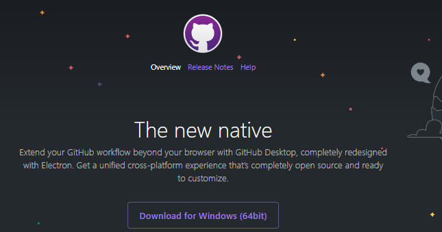
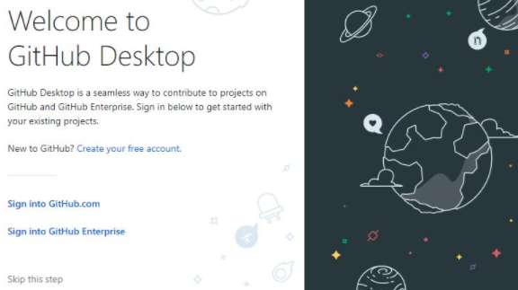

GitHubDeskTopとは、GitHubを便利に使うデスクトップ用ソフトのことだよ。
このソフトをインストールしないと、プログラムのイメージでよくある黒い画面に英語の命令をいっぱい書くことになるよ。
GitHubDeskTopの公式ページで「Downlode for Windows(64bit)」をクリック
ダウンロードが出来たら。ダブルクリックで起動
起動したら「Skip this step」をクリック。
更新履歴で表示される名前とEmailアドレスを登録するよ。GitHubで登録した名前とEmailアドレスで問題なし。
入力したら「Continue」をクリック。
「定期的にデータを送信してGitHubDeskTopの改善に役立てますか」と聞かれているよ。
協力したいって人は「Yes, submit anonymized usage data」をチェックしたまま「Finish」をクリック。
インストールは以上です。お疲れ様でした。